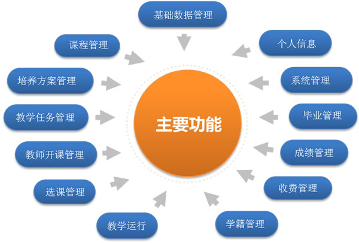
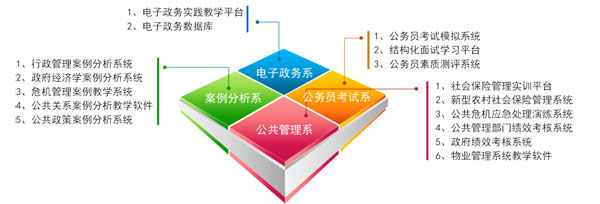
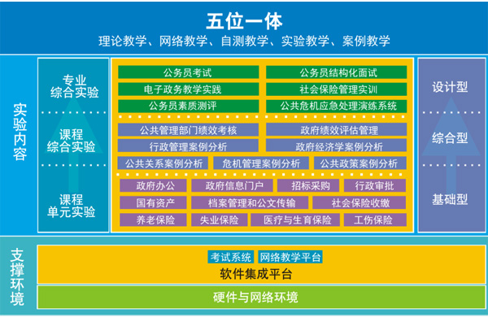
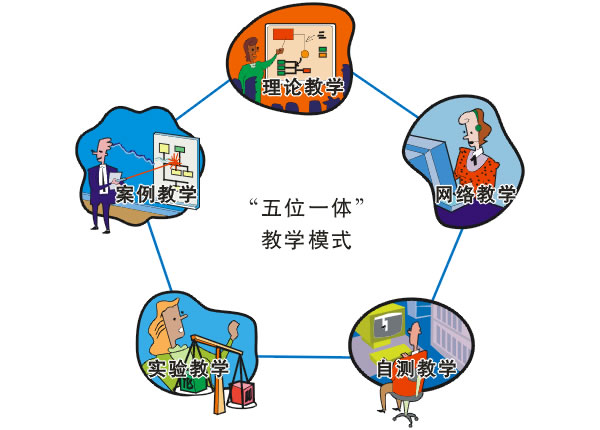

skldfskljdf
完全学分制教学管理系统
开发背景
近年来随着高校教学管理制度改革的重心由“学年学分制”逐步向“完全学分制”发展，与完全学分制相适应的教学管理信息化平台研究也逐步成为行业的热点。各类高校在这方面开展大量卓有成效的探索，形成了具有不同规模和功能的系统。
有策完全学分制系统不仅能满足高校实现完全学分管理的信息化建设的需要；也能够满足目前高校实施的学年制或学年学分制混合模式的教学模式。
该系统分为四个模块，包括教务处子系统、二级学院子系统、教师子系统和学生子系统。
教务处模块根据各个年级专业制定的培养方案，生成教学任务，将这些教学任务下发到二级学院，二级学院组织相应的教师进行开课，针对课程的开课情况，学生进行选课，在课程学习结束后，对选修了该课程的学生进行考核，记录其成绩。根据培养方案，判定学生是否能毕业和是否能拿到学位。
二级学院负责管理本学院的培养方案，根据教务处下达的教学任务，组织教师进行开课，同时对本学院的学生的选课情况进行监控和管理。
教师根据所在学院，开设相应的课程，针对学生的选课情况进行监控和筛选，在教学运行过程中，对教授的课程进行调停课，更新教学进度，在完成教学后，对学生进行考核，录入成绩。
学生可在系统中进行选课、查看学分统计、个人修读计划、选课、费用查询、成绩查询和毕业管理等。
开发目的
从实践上看，目前国内能与完全学分制相配套，可以真正用于学分制教学管理实践的教学管理信息化平台还基本是一个空白，这也直接影响了高校的完全学分制改革的探索与推进。目前我国实行学分制的高校，普遍采用的是学年学分制。因此，与教学管理相对应的高校教学信息化管理模式也是采用了学年学分制的模式，这种模式并不适用于完全学分制的教学管理，所以研究与开发基于个性化的教学管理信息化平台意义明显。
国内目前还没有真正意义上的完全学分制教学管理系统，基本上都建立于学年学分制系统之上的完全学分制过渡系统。而国外高校的学分制系统由于其国情、管理制度与模式等有很大的区别，因此很难直接应用于国内高校。
从这个意义来说，本项目的研究开发具有良好的发展前景，一是可以大力推动学校的完全学分制教学管理的改革；二是对全国的普通高校有良好的示范作用与推广意义。
研究内容
基于完全学分制的高校教学管理流程再造研究
在完全学分制的情况下，学生有着充分的自主选择权：专业选择权（随着学习的深入，可以选择不同的专业）、学业规划选择权（学生可定制个性的学习进程）、课程选择权（学校要提供充分的可自由选择的课程）、教师选择权（学生可以选择教师），显然需要应用企业流程再造（BPR）理论对现有的教学管理流程进行重组，以适应完全学分制下面向学生个体的管理新模式。
面向服务架构（SOA）在教学管理中的应用研究
目前高校中的应用很多如：教学管理、学生管理、财务管理、资产管理、一卡通等等，而这些系统中教学管理显然是其他应用的基础。因此，在教学管理信息化建设中采用了SOA的体系架构从而可以有效地进行校园资源的整合与集成。
完全学分制与教学资源配置的相关性研究
一般来说，教学资源包括三个方面的内容：一是人力资源, 诸如教师、教学辅助人员数量等等; 二是空间资源, 诸如教室、实验场所、操场等相关教学场所的数量; 三是时间资源, 指学生可用于自由支配的时间。在通过对学分制与人力资源、空间资源、时间资源配置的相关性研究基础上，确定在整个教学管理过程中起关键作用的资源，同时综合考虑和分析学校的资源分布状况, 是人力资源（教师） 资源稀缺型, 还是空间资源（教室、实验室）资源稀缺型, 或是时间资源稀缺型（学习的时间不足） , 而后在综合平衡各种资源不足的基础上, 通过解决最迫切的资源矛盾, 实现教学资源配置整体优化。
数据集成与应用集成
与现有的教学管理平台、校园卡管理系统、招生录取系统、考试管理系统、教学质量评价系统等进行有机集成，数据共享。
功能介绍

公共管理系统
完善的教学体系
四大系列包括七套教学模拟系统软件、三套考试系统和五套案例分析系统，涵盖了公共管理一级学科下公共管理、劳动与社会保障、公共事业管理、行政管理等多个学科方向的相关课程。

立体化教学内容
公共管理实践教学内容根据课程性质划分为：课程单元实验、课程综合实验和专业综合实验三个层次，学生在不同的学习阶段有不同的实践内容，教师自由搭配教学内容来适应不同层次学生的不同实验要求。

五位一体教学模式
通过理论教学、网络教学、自测教学、实验教学、案例教学的“五位一体”教学模式，以实现“全方位、全过程、全覆盖”的公共管理类专业试验实践教学体系。
